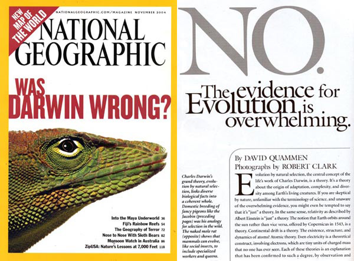
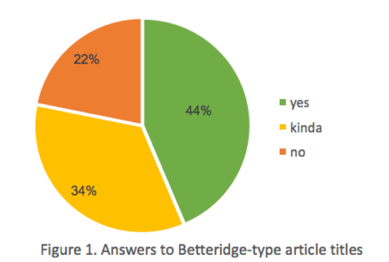

This post was originally written for the Winter 2017 issue of The Aggie Brickyard.

Does ecological research follow Betteridge’s Law of Headlines?
No.
Well, maybe. Probably not. Sometimes. Sort of?
For a period in which we might be glued to the news (or actively avoiding it), it may be a good time to remember how to interact with the news in a skeptical manner. As such, I’ve been thinking about Betteridge’s Law of Headlines. The law states (according to Wikipedia) that “Any headline that ends with a question mark can be answered by the word no.” While the rule isn’t actually a law, and it certainly isn’t always true, it’s important to consider why the law exists and what critique it is attempting to provide.
It has been suggested that yes/no type questions pop up in headlines when the author is intending to sensationalize the information, or otherwise to sell a non-story. Essentially, Betteridge-type headlines are the original “click bait”. By using a question mark at the end of a title, unsupported claims can gain footing and misleading statements can gain legitimacy. After all, the author is not staking out a claim, just simply asking questions.
Betteridge-type questions often look like the following, and their answers are often no: “Are potato chips the key to weight loss?” No. “Is the government plotting to make us a Muslim nation?” No. “Is it normal for someone your age to be unemployed?” MOM! I’M NOT UNEMPLOYED I’M IN GRAD SCHOOL!
I digress.
Thinking about Betteridge’s Law caused me to wonder if it applied in ecological research. So, I did what any sane person would do: I combed through 130+ issues of Ecology, Ecological Letters, Journal of Ecology, and Ecosphere to look for articles with question marks in them. I looked (with some help from Joanna Solins and Ryan Peek, thanks y’all) at tables of contents and tallied each article as either “No question” “other question” or “Betteridge-type question”. I either looked at three years or 500 articles worth of issues per journal. After downloading any article that had a “Betteridge-type question” in it, I established the answer and marked it as “yes” “no” or “kinda”.
In total, I categorized 2,585 articles with the vast majority of titles containing no question (96.03%). Betteridge-type questions, which can be answered with a simple yes or no, were 2.15% of all articles. “Other questions”, which asked things like, “how many” or “which” or “when does”, were also uncommon at 1.82%. There were no differences in the commonality of questions between the different journals (P = a lot).
I found 55 journal articles with a yes-no type question, including one that was later redacted (from a GGE faculty member no less! Gasp! Don’t worry, it was redacted due to good ol’ fashioned human error and excluded from my comparisons). Of these, “yes” or “maybe” were by far the most common answer to the paper’s central question (78%, Figure 1).

From this data, we can easily conclude that no…ecologists do not follow Betteridge’s law. When you see a question, in fact, you can assume the opposite, that the answer is probably yes or yes with some nuance. But then, why make your title a question?
It’s worth noting that in my investigation, I had originally begun looking at Conservation Biology, only to find out, 300 articles in, that they explicitly ban the use of yes/no questions in their titles. Stating in their Style Guide for Authors that, “Interrogatives make poor titles because the entire manuscript can often be summarized with a single word: yes or no”. They further encourage authors to avoid sensationalizing their titles or making “dogmatic” statements.
So, it seems ecologists avoid the sensationalism and the easy eye-catching format of Betteridge-type titles. However, looking into this ended up leaving me with many questions of my own. Why use a question in a title at all? Even though it was rare, questions in titles were not absent even in some of our most premier journals. Why not just state results plainly? Why ask leading questions? I believe part of it has to do with the messy nature of ecological research. Maybe sometimes a question is an easy way out of writing a concise title when the results are anything but simple. Who knows?
If you find good Betteridge-type questions in ecology, send them to me. I’m curious!